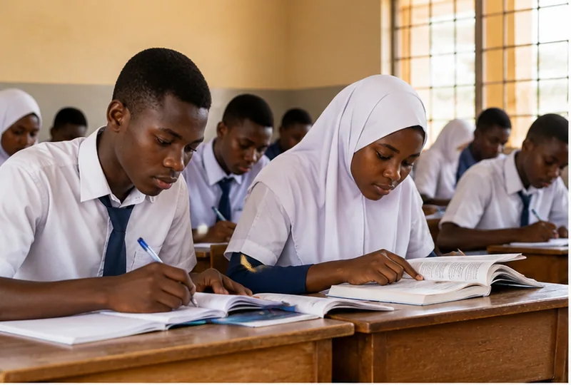
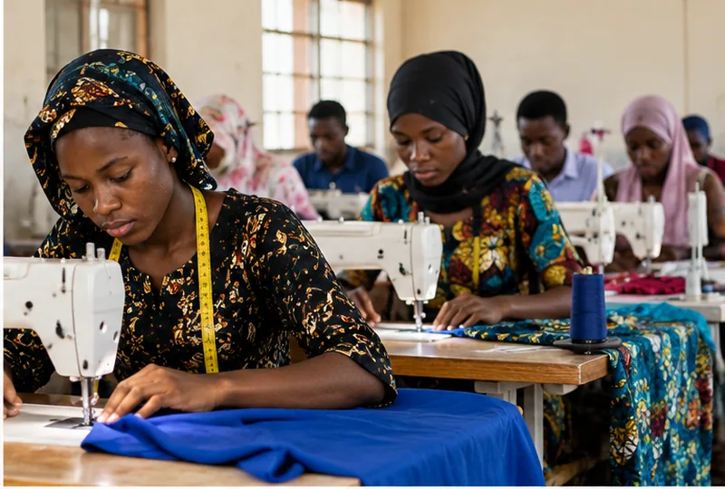
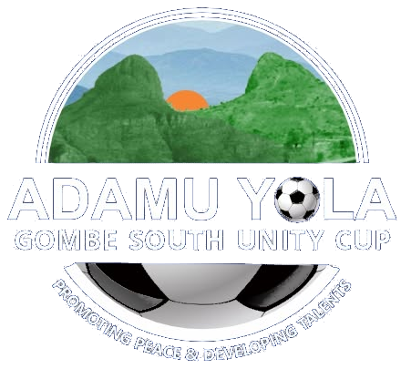
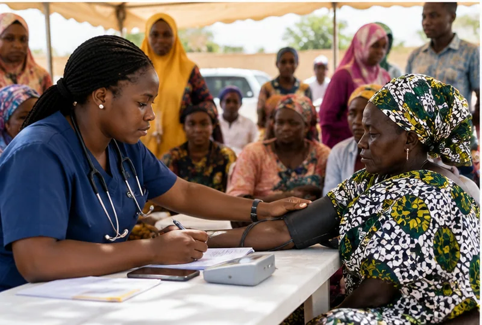
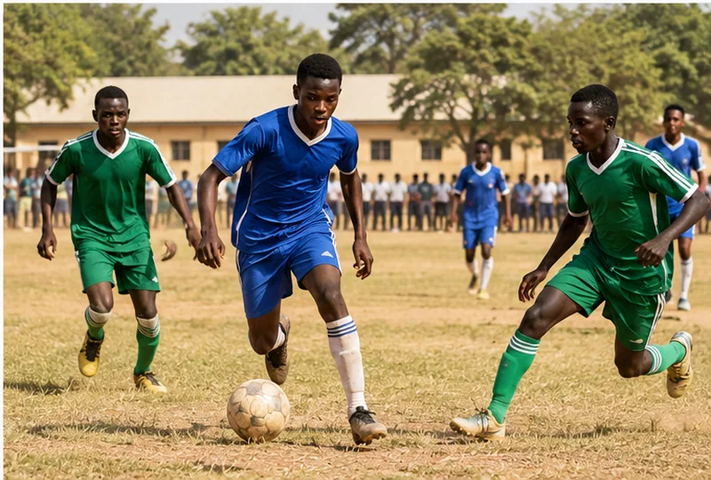

01 / Education
Educational Empowerment
Helping students continue their education when financial barriers threaten their progress.
Explore programme →Creating pathways through education, skills, community healthcare and grassroots sports — and recognising the people who make progress possible.
Illustrative photograph; not documentation of a foundation event.From enabling education to discovering football talent, each area is built around community opportunity.

Helping students continue their education when financial barriers threaten their progress.
Explore programme →
Practical learning that strengthens livelihoods, earning ability and self-reliance.
Explore programme →
A grassroots tournament where football brings communities together and creates pathways for emerging players.
Explore programme →
Community-centred efforts to bring basic healthcare services closer to people who need them.
Explore programme →
An inter-school platform designed to connect boys’ public secondary schools across all 11 local government areas of Gombe State.
Explore programme →The football tradition continues. Since 2016, the Unity Cup has brought communities together around competition, respect, player development and talent discovery.
Past editions have included post-tournament camping, peace campaigns and participation across Gombe South. The date of the forthcoming edition has not yet been confirmed for publication.
Explore the Unity Cup →Unity Cup launched, according to public competition history.
Foundation founding year listed by the organisation.
North-East Elite Basketball Camp and player development work.
Ninth Unity Cup champions reported in January.
These are documented milestones, not total beneficiaries or impact totals.
Our full history →View the supplied foundation identity and official Unity Cup mark, with the illustrative programme images clearly separated from authentic event documentation.
Original event photos are still awaiting recovery from social media or a foundation export; the archive keeps year-specific press reports linked without presenting unrelated pictures as real.
Browse available media →Partnership, volunteering, programme participation and support begin with a conversation.
Get involved →